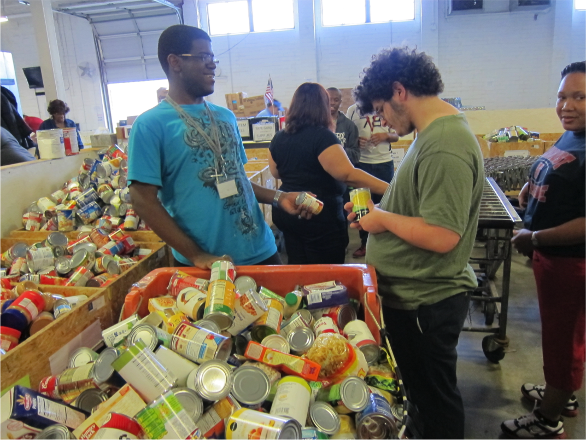
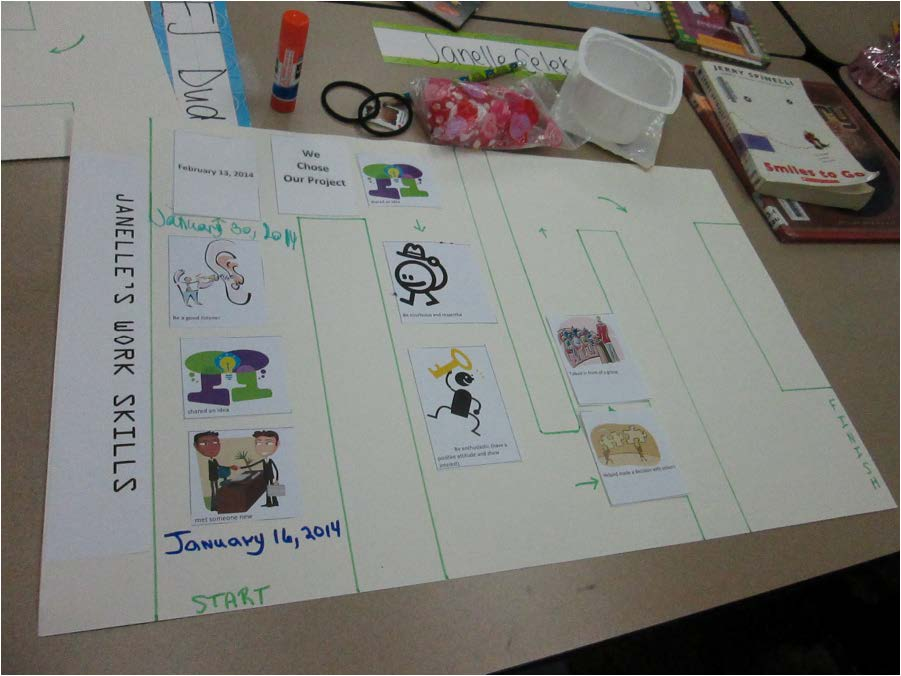

CONSIDERING COMMUNITY SERVICE
Career Development for Youth With Autism Spectrum Disorder
Authors: Jaimie Timmons, Agnes Zalewska, Allison Hall and Sheila Fesko
Introduction
Limited employment outcomes of young adults with autism spectrum disorder (ASD) and a recent surge in incidence of ASD diagnosis indicate a need for more effective school-to-work transition interventions. Community service opportunities can support young adults with ASD to gain skills, explore careers, and develop networks that can lead to meaningful employment.
This research-to-practice toolkit offers practical solutions for transition coordinators, educators, and others who want to implement community service activities that build skills for youth with ASD. This publication addresses career exploration. Other publications in the toolkit focus on social skills and self-determination.
The source of much of the information presented below is qualitative research conducted in Florida, completed as part of the Service Works for Youth with Autism project. Additional information is derived from other Institute for Community Inclusion work on transition planning and service contributing to employment for youth and adults with disabilities.
Service Works for Youth with Autism
Service Works for Youth with Autism is a three-year initiative that explored the impact of community service on career development, self-determination, and social skill building for youth with ASD in two Florida counties. Duval County includes the city of Jacksonville and is located in the northeastern part of the state. Lee County includes the city of Fort Myers and is in a southwestern coastal region.
During the five-month structured community service intervention (called Project Impact), students with ASD mapped their communities, collaboratively identified a community problem, and developed and implemented a subsequent community service project.
What is Project Impact?
Project Impact [PDF] was created by the Florida Governor’s Commission on Volunteerism and Community Service, Volunteer Florida. It is an intensive five-month community service experience planned and implemented with youth with disabilities. Project Impact uses a comprehensive guide to organize its activities.
Project Impact youth are guided by trained AmeriCorps facilitators and mentors. These mentors are AmeriCorps members serving formal terms. Other key players may include personnel from a local disability organization and classroom teachers who serve as site coordinators and help support project activities in between meetings.
What is AmeriCorps?
AmeriCorps is one of three core programs of the Corporation for National and Community Service. AmeriCorps programs provide opportunities for Americans to make an intensive commitment to service. The AmeriCorps network of local, state, and national service programs engages more than 80,000 Americans in projects around the nation each year.
Project Impact starts with a student-led community mapping exercise, in which students identify a community problem and the resources needed to address it. The students develop a plan for a service activity that will address the problem, and then implement the service activity.
Each month, students meet with peers and their AmeriCorps facilitator. Together, the students outline their roles, their responsibilities, and exactly how the service project will unfold. They participate in regular reflection activities that allow them to consider the skills they are developing and the impact the students are having in their community.
Through Project Impact, Florida AmeriCorps programs, in conjunction with a range of community partners, have implemented 40 community service projects with 500 youth with a range of disabilities in 12 Florida counties. Service projects have included literacy efforts and tutoring, grounds beautification at local parks and zoos, cooking meals for those experiencing hunger, toiletry and canned food drives, recreational activities at assisted living facilities, and even restoring oyster beds.
Where we got this information
The findings in this publication are based on 23 in-person interviews with a range of participants in the Service Works for Youth with Autism project. Participants were asked about their experience in the project as it relates to employment.
Interviewees included six students, six teachers/school staff, three Project Impact facilitators, five mentors, and three parents. Eight participants were from a Lee County high school, seven were from one high school in Duval County, and eight were from a second high school in Duval County. The students who participated in the interviews were of diverse ethnic and cultural backgrounds, ages, and severity of disability. All six students interviewed were male.
The service projects

School #1 in Jacksonville, FL conducted a school-wide food drive, engaging the larger school community in the effort. They created posters, drop boxes, and announcements for the morning school news. They delivered, sorted, and stocked the food at a local food pantry.
School #2 in Jacksonville had many students interested in animals and animal care. They prepared animal foods and beautified grounds at the Jacksonville Zoo. A zoo contact visited classrooms to discuss the range of jobs offered at the zoo.

In school #3 in Fort Myers, students prepared a special lunch for fellow classmates who experience food insecurity. They engaged the junior ROTC (Army Reserve Officers’ Training Corps) students in the lunch, and all three groups participated in recreational, team-building activities
Findings: Community service can have an impact on career development
The service experience presented in this brief created a career development and career exploration opportunity. Students had opportunities to:
- build soft skills necessary for work such as working in a team, perseverance and follow-through, and interpersonal skills; and
- explore new work-related options and ideas
What are soft skills?
Soft skills are applied skills that are critical to employment success such as communication, enthusiasm and attitude, teamwork, networking, problem solving and critical thinking, and professionalism.
Opportunities to build soft skills necessary for work.
Teamwork. Students worked collaboratively throughout the planning and implementation of their community service projects. Students had to negotiate with one another about how to complete assigned tasks, practice patience and communication with others in preparation for the service project. Teachers explained how students needed to make decisions as a team and work together during the service project.
“…every group (had) four or five students, so they had to communicate with each other…And they also tried to work (so that) one person had one task, and then the other people had other tasks. So they kind of helped assign each other tasks.” facilitator
Perseverance and follow-through. During the service experience, students were required to complete tasks assigned by those in charge. This enabled them to practice listening skills, and accept ownership for following through on their responsibilities. .
“He didn't give up and he didn't quit and he kept going. And he took direction from the other students as well as the teacher. And he wasn't mad about it.” facilitator
Interpersonal skill building. Students met new facilitators, mentors, and people out in the community. They had the opportunity to practice interacting and social skill-building with these new people including maintaining eye contact, engaging in proper introductions, not interrupting when others are talking (e.g. saying “excuse me”) and hand-shaking. These are especially important skills considering the unique characteristics associated with ASD. Furthermore, students needed to practice these skills in unfamiliar environments and with unpredictable routines, which can be especially anxiety-provoking.
Students who participated in the service project at the zoo really “took to the personnel…we had faculty from the zoo coming in and out and saying hi and introducing themselves and talking…and [the students] were just raising their hands and talking to them like it was nothing…[even though] we were strangers to [their] environment.”
Opportunities to explore new work-related options and ideas.
Exposure to new experiences. The service experience exposed students to new ideas, new aspects of their communities, and new options for work. One facilitator noted that simply seeing a warehouse with forklifts was a new and interesting aspect of their community that they had not seen before. Another example was the zoo, which created a previously unrecognized career option for students, many of whom were interested in working with animals. During a classroom visit from a zoo staff member, students listed all the various jobs at a zoo from ticketing agents, to parking lot attendant, to gift shop clerks; most of which these students had never considered before.
Expanding or clarifying career options. Exposure to new experiences helped to expand students’ interests or horizons, or even help to clarify potential employment goals. With this exposure, and some intentional time and effort, several students were able to articulate what they might want to do in the future. In other words, the exposure to new ideas stimulated the development of future goals.
Creating community service activities: Three easy tips
Creating community service opportunities can be overwhelming if you don’t know where to start. Consider the following three tips to begin:
- Identify your local service program.
- Do it yourself!
- Be inclusive.
#1. Identify your local service program.
Collaboration with service programs can benefit schools as well as the service program. While schools can create community service opportunities for youth that allow them to gain valuable experience, service programs gain access to qualified, committed participants. The local service community may be unfamiliar with the school and disability community, and vice versa. Therefore, a critical first step is learning more about each other.
Contact your state’s service commission to help you identify service programs in your community. They also may be able to share examples of the types of partnerships occurring in other parts of the state.
Once you’ve identified a local service program, set up a short, informal meeting. Be prepared to explain your school, students, and the goals you hope to achieve.
Invite service staff to meet school staff and students. Ask them to present an overview of the community service options other youth have engaged in recently.
Reassure service staff that you will help with student support needs. Remember, you are the one that likely knows your students the best. The service program will rely on you to offer accommodations.
#2. Do it yourself!
If you want to create community service experiences on your own, here are some tips to consider.
Create structure. Establish a timeline for the service project, and stick to it. Meeting weekly until the service project is complete will promote continuity, especially for students who also have intellectual disabilities.
Create formal agendas for each planning meeting that ensure full participation. Allow time for discussion about how each activity is building a skill needed for employment.
Incorporate regular reflection activities. Such activities should connect each phase of the experience to skills gained and future career options.
Use team-building exercises to increase peer connections, promote group problem-solving, and build decision-making skills. See below for some ideas.
Use committees to plan and implement different aspects of the project. A marketing committee might be in charge of letting others know about your project. A student interested in art might be elected to create posters. A student interested in photography might be in charge of documenting the project for the school newspaper.
Coordinate a service day for students at an organization or within your school community. Assess the physical space and attitudes/sensitivity of staff at the service location in advance. Provide accommodations and etiquette training as needed.
#3. Be inclusive.
Following these essential elements in inclusive service will allow you to maximize each student’s learning and his or her role in the project. According to "Kumin and Lee (2007)", you can create inclusive service opportunities through consideration of the following:
- PREPARE: Introduce students to the issues that will be addressed, select appropriate projects, and provide background info and training. In the preparation phase, teachers, students, and a community agency begin communication regarding possible project ideas, choosing a real community need, linking the service project to the curriculum, securing necessary funds and administrative support, and writing an action plan.
- ACT: Engage in service to help others in the community. This action moves issues from students’ “heads” to their “hands.” In the action phase, the service project is implemented.
- REFLECT: Look back on the experience, raise and address questions, and assess the project or program. During the reflection, project participants consider the project’s impact on their own learning and career goals and on the lives of those served.
- CELEBRATE: Evaluate the service experience, celebrate accomplishments, and make commitments for the future. In the celebration phase, students take pride in the impact they made and receive recognition for their work.
Now let’s consider ways to ensure that your community service experience includes career development and career exploration.
What you can do:
As facilitators of community service projects, remaining aware of intentionally integrating processes and activities that support career development and career exploration is critical. This includes not only offering opportunities to build employment skills, but also making a clear link between the identification of those skills and how they can be used in future employment.
Intentional matching of students to the service activity.
In a collective activity such as group service projects, facilitators cannot create completely individualized placements. However, consider choosing a service activity that at least some of your students are interested in. Maybe it’s gardening and nature or maybe it’s working with animals. This allows them to not only expand their network by meeting new people, but meeting new people from whom they may later seek employment. Effective matching is also more likely when the community service location is assessed prior to the actual project so that students’ accommodation and support needs are addressed in advance as much as possible.
Schedule meetings and reflection activities that focus on the skills student are acquiring during the service project. Facilitators can complement the service experience with regularly scheduled meetings, trainings, and workshops, as well as reflection activities that focus on the transferrable professional skills youth participants are acquiring during the service project. Reflection is an activity that typically occurs as part of the service effort where participants consider the impact of the activity and what they have learned from participating.
Taking the time to ask youth participants to articulate what they learned allows them to relate these skills to their future jobs. Students can then list such skills on resumes and highlight them in future job interviews. Don’t forget that soft skills are also important. Provide youth the opportunity to practice soft skills while serving (communication, job etiquette, problem solving, travel training, networking, time management, responsibility) and then make sure they can describe the skills they have learned and how they relate to work.
Creating accessible reflection activities for youth with ASD
Students in the Service Works project benefitted greatly from hands-on activities that incorporated the use of pictures rather than words. In one reflection activity, students were asked to draw a timeline of the service planning meetings and eventual service activity, including start dates and “the finish line” or the service project. After each meeting, students cut out pictures representing skills gained (i.e. I shared an idea today, I listened to others’ ideas, I raised my hand when I had a question, I met someone new, etc) and pasted them on their timelines. This activity allowed students to identify new skills, created a visual log of those skills, established a mechanism for sharing those skills with others, and acted as a tool to increase continuity of information in between service project planning meetings. 
Have a post-service transition period.
At the conclusion of the community service experience, facilitators can create a post-service transition period focused on learning how to obtain and retain a job. This training can include topics such as mock interviews, role-playing, resume writing, networking, and talking about disclosure of disabilities and workplace accommodations. This transition period should also incorporate awareness of job accommodations as well as community-based employment resources for students and families as the students exit high school and seek permanent employment, such as vocational rehabilitation (VR). Each student’s VR counselor can help to translate the value and benefit of the service experience to the student’s employability and resume development.
Incorporate other career development activities into the project.
Facilitators can incorporate other informal career development activities, such as job shadowing and career-focused mentoring into the community service planning and implementation. These activities should emphasize career exploration and soft skills acquisition.
Career-focused mentoring
Mentoring is recognized as one of the most important strategies for assisting youth in making a positive transition into adulthood. Career-focused mentoring provides young people the opportunity to get a glimpse of the world of work that may not otherwise be available to them. It also allows them to gain and practice skills that are useful in professional and other settings, and to prepare for life as an adult. Career-focused mentors can share employment success strategies, provide employment-related guidance and networking support, and act as a reference.
The Office of Disability and Employment Policy’s Career-Focused Mentoring for Youth: The What, Why and How offers an overview of the technique and its impact on youth.
In addition, the National Collaborative on Workforce and Disability for Youth developed a guide entitled Paving the Way to Work: A Guide to Career-Focused Mentoring. Designed for older youth, this guide is intended for individuals designing mentoring programs for youth, including youth with disabilities, in the transition phase to adulthood.
Conclusion
Community service for transition-age youth with ASD is a great way to make a big difference in the lives of others, all while your students are developing work skills and exploring potential career paths. Our study described how community service had an impact on job development skills necessary for future employment and community inclusion. Through consideration of the above strategies, your students can explore careers in your local community, and can practice meeting new people and building relationships, all while filling a critical community need.
Resources
"Skills to Pay the Bills: Mastering Soft Skills for Workplace Success," is a curriculum developed by the Office of Disability and Employment Policy focused on teaching "soft" or workforce readiness skills to youth, including youth with disabilities. It focuses on six key skill areas: communication, enthusiasm and attitude, teamwork, networking, problem solving and critical thinking, and professionalism.
The National Service to Employment (NextSTEP) project offers a toolkit designed to incorporate career development activities into community service. The toolkit offers activities, strategies and resources to help build career development in the context of service.
Other products in this series
To learn more about how service opportunities can build skills for students with ASD, read the other publications in this toolkit:
- Considering Community Service: Building Social Skills for Youth with Autism Spectrum Disorder
- Considering Community Service: Building Self-Determination Skills for Youth with Autism Spectrum Disorder
Acknowledgements
This study was supported by grant R40 MC 22645 from the Maternal and Child Health Research Program, Maternal and Child Health Bureau (Combating Autism Act of 2006, as amended by the Combating Autism Reauthorization Act of 2011), Health Resources and Services Administration, Department of Health and Human Services.
The Institute for Community Inclusion would like to thank our project collaborators: the Florida Governor’s Commission on Service and Volunteering (Volunteer Florida), and the Center for Autism and Related Disabilities (CARD) at the University of South Florida.
Go to top